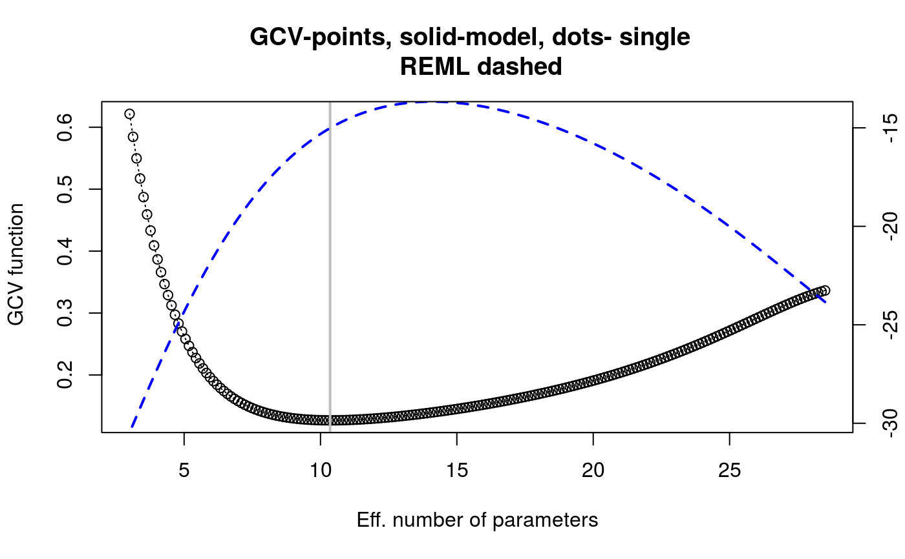
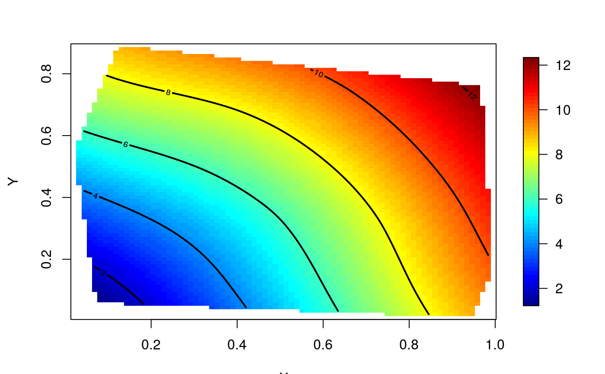

fit_surface.RdFit a Thin-plate splines model to a set of observations
fit_surface(x)
| x | A |
|---|
An object of class Krig and Tps which includes
the fitted values and the model residuals. See
Tps. It also allows interpolation using
interpolate.
d <- data.frame(lon = runif(30), lat = runif(30)) d <- transform(d, date = round(10 * sqrt(lon**2 + lat**2))) sro <- sr_obs(d, "date") fm <- fit_surface(sro) summary(fm)#> CALL: #> Tps(x = st_coordinates(x), Y = x[[attr(x, "timevar")]], give.warning = TRUE) #> #> Number of Observations: 30 #> Number of unique points: 30 #> Number of parameters in the null space 3 #> Parameters for fixed spatial drift 3 #> Effective degrees of freedom: 10.4 #> Residual degrees of freedom: 19.6 #> MLE sigma 0.3211 #> GCV sigma 0.2881 #> MLE rho 16.53 #> Scale passed for covariance (rho) <NA> #> Scale passed for nugget (sigma^2) <NA> #> Smoothing parameter lambda 0.006237 #> #> Residual Summary: #> min 1st Q median 3rd Q max #> -0.46170 -0.15790 0.04453 0.14390 0.41520 #> #> Covariance Model: Rad.cov #> Names of non-default covariance arguments: #> p #> #> DETAILS ON SMOOTHING PARAMETER: #> Method used: GCV Cost: 1 #> lambda trA GCV GCV.one GCV.model shat #> 0.006237 10.352214 0.126753 0.126753 NA 0.288122 #> #> Summary of all estimates found for lambda #> lambda trA GCV shat -lnLike Prof converge #> GCV 0.006237 10.35 0.1268 0.2881 15.01 1 #> GCV.model NA NA NA NA NA NA #> GCV.one 0.006237 10.35 0.1268 0.2881 NA 1 #> RMSE NA NA NA NA NA NA #> pure error NA NA NA NA NA NA #> REML 0.002306 14.09 0.1394 0.2719 13.67 3